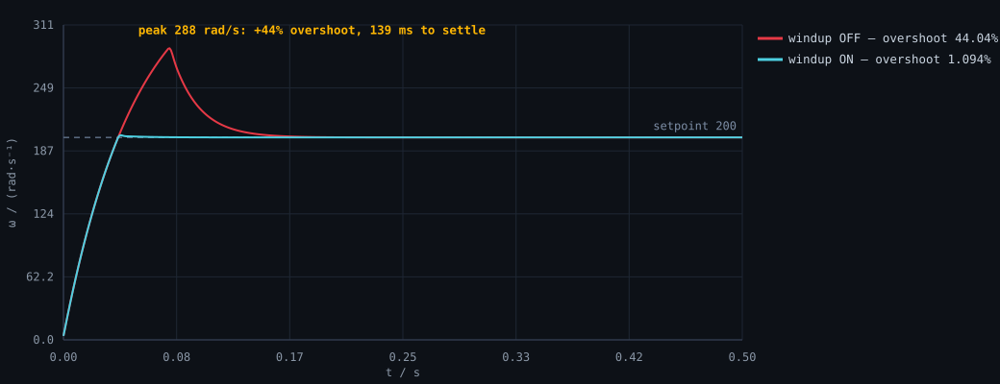

定时器与 PWM：从时钟树算到占空比Timers & PWM: from clock tree to duty cycle
第 04 章 · 等硬件到货后补上机波形（呼吸灯 + 舵机角度实测）Chapter 04 · on-hardware waveforms to follow once the board arrives
北京交通大学Beijing Jiaotong University / 自动化与智能学院 · 自动化类 · 2026 级 School of Automation and Intelligence · Class of 2026
我的起点是：一点 C 语言基础，没碰过硬件。所以我把学习顺序倒过来——先把控制算法在电脑上真跑通、把每个参数的作用用数据讲清楚，再按路线图逐个打通 STM32 外设与电路，每一步都留下可以复现的痕迹。 I started with a bit of C and no hardware at all. So I reordered the learning path: get the control algorithm genuinely running on a PC first, and explain what each parameter really does with real data — then work through the STM32 peripherals and circuits one by one, leaving a reproducible trace at every step.
这个站点里 5 张曲线全部来自仓库里 code/06-pid-sim 的真实运行输出，原始 CSV 一起放在仓库里，你可以下载核对，也可以用一条命令自己重跑一遍。
Every one of the 5 charts here comes from an actual run of code/06-pid-sim; the raw CSVs ship with the repo so you can check them — or re-run everything with a single command.
我的硬件（STM32F103C8T6 最小系统板 + ST-Link，全套预算约 ¥70）目前还没到货。所以这个站和仓库里所有 STM32 内容都以「能在电脑上真实运行的」为边界：跑得起来的我跑给你看（PID 仿真、18 组参数扫参、原始 CSV、5 张曲线）；还没上机的部分我会明确写「待上机」，不会写「已烧录」——因为写上去的东西，面试时是要被追问的。硬件到货后的上机记录会补到对应章节。 My board (STM32F103C8T6 + ST-Link, ~¥70 total) has not arrived yet. So everything about STM32 on this site stays inside the boundary of what actually runs on a PC: the PID simulation, 18 parameter sweeps, raw CSVs and all 5 charts are real and reproducible. Anything that needs the board is explicitly marked “pending hardware” — never “flashed and verified”. Post-hardware lab records will be appended to each chapter.
这张表是我把招新海报上的要求逐条拆开、逐条对照自己的结果。没做到的我就写「待补」，并写清打算怎么补——因为把它藏起来，面试时只会更难看。 I pulled apart the recruitment poster line by line and mapped each requirement to my actual state. What I can't do yet says “to be filled”, together with my plan for it — hiding it would only look worse in an interview.
| 海报要求Requirement | 我的现状 / 证据My current state / evidence | 状态Status |
|---|---|---|
| 理解 PID 及每个参数的含义Understand PID and what each term does | 写了能脱离硬件在 PC 上跑的 PID 仿真（C 语言，gcc 16.2 真实编译运行过），扫了 18 组参数，输出真实 CSV 与曲线。能指着数据说清：Kp 大→上升快但超调（Kp=8 时超调 0.85%）；Ki 消稳态误差但引入超调（Ki=50 时超调 2.89%）；积分饱和会把超调从 1.09% 干到 44.04%；纯微分把噪声抖动放大 2.8 倍，加一阶滤波后降回原水平。 I wrote a hardware-free PID simulation in C (genuinely compiled and run with gcc 16.2), swept 18 cases, and kept the raw CSVs plus charts. With the data in hand I can explain: larger Kp cuts rise time but adds overshoot (0.85% at Kp=8); Ki removes steady-state error but adds overshoot (2.89% at Ki=50); integral windup pushes overshoot from 1.09% to 44.04%; pure derivative amplifies noise jitter 2.8×, and a first-order filter brings it back. | ✅ 已具备have it |
| 较好的 C / C++ 编程基础Solid C / C++ foundation |
本仓库全部算法代码是 C（结构体 + 指针 + 定点/浮点混合运算，按 HAL 风格分层：pid.c / plant.c / sim.c）；另有独立完成的软件项目 debate-notes（TypeScript + React + Electron + SQLite，含端到端测试）。
All algorithm code here is C (structs, pointers, HAL-style layering: pid.c / plant.c / sim.c). Separately I built debate-notes, a TypeScript + React + Electron + SQLite app with end-to-end tests.
|
✅ 已具备have it |
| 掌握 STM32 常用外设（定时器 / PWM / I2C / 串口 / ADC）STM32 peripherals (timers, PWM, I²C, UART, ADC) | 已把每个外设的配置逻辑推成公式链（时钟树 → 预分频 → ARR/CCR → 实际频率；I²C 时序与上拉电阻取值；ADC 分辨率与参考电压），并规划成 11 章路线图的对应章节。板子未到货，上机验证与波形记录待补——到货后第一周做完 GPIO/定时器/PWM，第二周串口与 I²C。 I've derived the configuration logic of each peripheral as a formula chain (clock tree → prescaler → ARR/CCR → actual frequency; I²C timing vs pull-up sizing; ADC resolution vs Vref) and mapped it into the 11-chapter roadmap. The board hasn't arrived, so on-hardware verification is still pending — GPIO/timer/PWM in week one after it lands, UART and I²C in week two. | 🟡 进行中in progress |
| 会查数据手册、有自主查资料的意识Reads datasheets, self-directed research | 学习笔记给自己定的硬规矩：每个结论必须标注出处（ST 的 RM0008 参考手册、SSD1306 手册、数据手册的具体章节/页码），不写「教程上说」。PID 那部分也不是抄的，是自己推的位置式/增量式公式并写成代码验证。 A hard rule I set for my notes: every conclusion cites its source (specific sections/pages of ST's RM0008 reference manual, the SSD1306 datasheet, device datasheets) — never “because a tutorial said so”. The PID part isn't copied either: I derived the positional/incremental forms myself and verified them in code. | 🟡 进行中in progress |
| CubeMX 配置并完成简单项目（如呼吸灯）CubeMX-configured simple project (e.g. breathing LED) | 工具链与工程结构已就位（本机已装 arm-none-eabi / w64devkit，算法模块能脱离硬件编译测试）；CubeMX + Keil 的完整工程待硬件到货后落地（C 盘空间不足，正在清理后安装）。 Toolchain and project layout are ready (w64devkit/arm-none-eabi on this machine; algorithm modules compile and test off-hardware). The full CubeMX + Keil project lands once hardware arrives (freeing up disk space first). | 📝 待补planned |
| 熟悉常用模块（0.96 寸 OLED 等）Common modules (0.96" OLED etc.) | SSD1306 的显存分页结构、I²C 从机地址与 ACK 时序已经读过并整理；驱动代码与上机效果待补。 I've read up on SSD1306's paged GDDRAM layout, I²C slave address and ACK timing; driver code and on-hardware results are pending. | 📝 待补planned |
| 研发任务：通信协议（帧头/校验/上位机）R&D task: comms protocol (framing, checksum, host GUI) | 仿真里的数据链路已经跑通「采样 → 打包 → 落盘 → 绘图」全过程；串口帧协议（帧头 + 长度 + 序号 + 载荷 + 校验和）与上位机脚本列在路线图第 10 章，等能用真实串口收发后再落地验证。 The simulation pipeline already covers sample → pack → persist → plot end to end. The UART frame protocol (header + length + seq + payload + checksum) and host-side script are chapter 10 of the roadmap, to be validated once real UART traffic is available. | 📝 待补planned |
| 研发任务：底盘功率控制 / 电机控制（CAN）R&D task: chassis power control / CAN motors | 🔬 还没接触：只知道概念（裁判系统给功率上限，要按功率反推电流限幅），没写过 CAN，也没调过 M3508/M2006。这是我进了战队最想先补的一块。 🔬 Not yet: I know the idea (the referee system caps power, so you limit current accordingly) but I've never written CAN code or tuned an M3508/M2006. This is the first thing I want to learn on the team. | ❌ 还没做到not yet |
| 不怕「坐牢」、积极探索、重视合作Endurance, curiosity, teamwork | 这次的 PID 仿真就是「坐牢」的结果：为了搞清 Kd 对噪声的影响，把同一组参数跑了带滤波/不带滤波 3 种情况，发现抖动反而变大，又回去查一阶滤波的截止频率，才把结论写对。错的结论我没删，留在笔记里。 This PID work is exactly that kind of grind: to pin down how Kd interacts with noise I ran each case with and without a filter, found jitter getting worse, went back to the first-order filter's cutoff frequency, and only then wrote the conclusion down. I kept the wrong turns in the notes instead of deleting them. | ✅ 学习方式working style |
| 海报要求Requirement | 我的现状 / 证据My current state / evidence | 状态Status |
|---|---|---|
| 较强的学习能力与时间管理Strong learning ability & time management | 用一个学期把自己的学习拆成「路线图 → 每章目标 → 每章可复现的实验」，并按周推进；这次从「只有一点 C 基础」到「能自己推导并验证 PID」，是完整的自学闭环（选资料 → 推导 → 写代码 → 跑数据 → 写结论）。 I broke my own learning into a roadmap → per-chapter goals → reproducible experiments, and advanced it weekly. Going from “a bit of C” to deriving and validating PID myself is a complete self-study loop: pick sources → derive → code → run → conclude. | ✅ 已体现shown |
| 热爱动手实践Loves hands-on work | 为了不空等硬件，我先把「能在电脑上动手的部分」做到位：自己写仿真、自己扫参数、自己画曲线。硬件清单已经列好（最小系统板 + ST-Link + 面包板 + OLED + 电位器，约 ¥70），到货当天开始上机。 Rather than waiting idle for hardware, I did the hands-on part that a PC allows: wrote the simulation, swept parameters, plotted the results. The BOM is ready (Blue Pill + ST-Link + breadboard + OLED + potentiometer, ~¥70) and I start on hardware the day it arrives. | 🟡 PC 侧已动手PC-side done |
| 基本电学素养Basic electrical literacy | 我的做法是不照抄教程，而是把每个电路算清楚：LED 限流电阻怎么按压降与电流选、分压公式、I²C 上拉电阻取值与上升时间的关系、去耦电容为什么必须贴在电源脚旁边。这部分以「手算 + 公式」形式写进路线图第 03 / 08 章。 Instead of copying tutorials I calculate every circuit: sizing an LED resistor from forward drop and current, the divider formula, how I²C pull-up value relates to rise time, and why decoupling caps must sit next to the power pin. This lives in chapters 03 / 08 as hand calculations and formulas. | 🟡 进行中in progress |
| 有 STM32 开发经验者优先STM32 experience preferred | 诚实说：还没有上机经验。有 PC 侧 C 语言工程能力、有对外设配置原理的推导、有一个完整软件项目的工程习惯；上机经验我来战队补。 Honestly: no on-hardware experience yet. What I do have is C engineering on the PC side, derivation-level understanding of peripheral configuration, and the engineering habits from shipping a full software project. On-hardware experience is what I'm here to earn. | ❌ 待补not yet |
| 研发任务：单片机外围电路、PCB 与调试R&D task: peripheral circuits, PCB & bring-up | 🔬 计划用立创 EDA 画第一块板（STM32 最小系统 + 电源部分），尚未开始布线、也没打样焊接过。我希望从焊接、测数据这类活开始参与。 🔬 Plan: draw my first board in LCEDA (STM32 minimal system + power section). No routing, no fabrication, no soldering yet. I'm happy to start from soldering and measurement work. | 📝 待补planned |
| 研发任务：超级电容管理 / 无线充电 / 缓启动R&D task: supercap manager / wireless charging / soft-start | ❌ 完全没接触过。这是海报里我最没底、也最想学的一块。 ❌ Zero exposure. This is the part of the poster I'm least sure about — and most eager to learn. | ❌ 还没做到not yet |
一个是正在进行的嵌入式学习仓库，一个是我独立做完并公开的软件项目。共同点是：都能被点开、被运行、被追问。 One is an in-progress embedded learning repo; the other is a software project I built and published on my own. Both can be opened, run and questioned.
按「电路基础 → STM32 外设 → 控制算法」两条线并行走：电控线走 GPIO → 定时器/PWM → 串口 → I²C → ADC → 通信协议 → PID 闭环；电路线走欧姆定律/限流分压 → 去耦与电源完整性 → 原理图 → PCB。 Two parallel tracks: control (GPIO → timers/PWM → UART → I²C → ADC → protocol → PID loop) and electronics (Ohm's law, current limiting, dividers → decoupling & power integrity → schematic → PCB).
这个项目最硬的一块是可复现的 PID 仿真：为了让「Kp/Ki/Kd 各自在干什么」不靠感觉，我写了一个脱离硬件的电机模型 + 控制器，一次跑完 18 组参数，把上升时间、超调、稳态误差、稳态时间、控制量峰值、抖动全部量化成 CSV。下面两张图就是它的真实输出——不是示意图。 The strongest part is a reproducible PID simulation. To keep “what does each term do” out of the realm of vibes, I built a hardware-free motor model plus controller, ran 18 parameter cases in one go, and quantified rise time, overshoot, steady-state error, settling time, peak control effort and jitter into CSV. The two charts below are its real output — not illustrations.

data/windup_off.csv / windup_on.csv。
Fig 1 · Integral windup: same Kp=1 / Ki=50, anti-windup on vs off — overshoot drops from 44.04% to 1.09%, settling time from 139 ms to 39 ms. Raw data: data/windup_off.csv / windup_on.csv.

给辩手自己用的离线优先比赛记录程序：赛制、辩位、评委、票数、复盘笔记都在本地 SQLite 里，不依赖网络。从数据模型到界面全部自己写，并用端到端测试保护核心流程。 An offline-first match log for debaters: formats, positions, judges, ballots and review notes all in local SQLite, no network needed. I wrote the data model and the UI myself and guarded the core flows with end-to-end tests.
我不写「完成度 35%」这种自己都说不清的数字，而是把每章拆成三件事逐格标注：要点整理 → 代码 → 上机波形/数据。🟡 表示开始了但没走完，⬜ 表示还没开始。唯一的 ✅✅ 在 PID 那一行，因为那是真的跑出来、有 CSV 可以核对的。 Instead of made-up percentages, each chapter is broken into three verifiable cells: notes → code → on-hardware traces/data. 🟡 means started but unfinished, ⬜ means not started. The only double-✅ row is PID — because that one really ran and has CSVs you can check.
| 章节Chapter | 要点整理Notes | 代码（可编译）Code (compiles) | 上机波形 / 数据On-hardware data |
|---|---|---|---|
| 00 学习路线图与方法论00 Roadmap & method | ✅ | — | — |
| 09 PID 控制与参数整定09 PID control & tuning | ✅ | ✅ gcc 真编译运行really compiled & run | ✅ 仿真数据 18 组18 sim cases （PC 仿真，非真机）(PC simulation, not hardware) |
| 10 通信协议设计10 Protocol design | 🟡 帧格式已定frame format fixed | ⬜ | ⬜ |
| 01 环境搭建01 Toolchain | 🟡 | 🟡 PC 侧工具链可用PC-side toolchain works | ⬜ CubeMX/Keil 未装CubeMX/Keil pending |
| 03 电路基础（一）限流与分压03 Circuits I: limiting & dividers | 🟡 | ⬜ | ⬜ |
| 08 电路基础（二）电源与去耦08 Circuits II: power & decoupling | 🟡 | ⬜ | ⬜ |
| 02 GPIO · 04 定时器/PWM · 05 串口 · 06 I²C/OLED · 07 ADC02 GPIO · 04 Timers/PWM · 05 UART · 06 I²C/OLED · 07 ADC | 🟡 要点已列outlined | ⬜ | ⬜ |
确定「电路基础 → STM32 外设 → 控制算法」的路线，写出 PID 仿真并在本机真实编译运行，产出 18 组参数对照数据与 5 张曲线。Settled the “circuits → peripherals → control” order, wrote the PID simulation, compiled and ran it locally, and produced 18 sweep cases with real CSVs and 5 charts.
把仿真结论写成可读的文章与复现步骤；清理磁盘空间安装 CubeMX + Keil；按清单采购最小系统板、ST-Link、面包板、OLED。Turning results into readable write-ups and reproduction steps; freeing disk space for CubeMX + Keil; buying the Blue Pill, ST-Link, breadboard and OLED.
GPIO / 定时器 PWM / 串口 / I²C OLED / ADC 逐章上机，每章附真实波形与截图；把上机记录补进对应章节。GPIO, timer PWM, UART, I²C OLED and ADC on real hardware, each with real waveforms and screenshots appended to its chapter.
这是我最想补的短板——先调通 CAN 收发电机报文，再尝试电流限幅与功率控制闭环。也打算画第一块 PCB 并打样焊接。My biggest gap: first get CAN motor feedback working, then try current limiting and a power-control loop. I also want to route and fabricate my first PCB.
前 3 篇已经有了（内容全部基于仓库里的真实数据）；后面的章节在硬件到货后陆续补。 The first three are live and grounded in the repo's real data; the rest follow once hardware arrives.
Kp / Ki / Kd 逐项扫参，每个结论都对应一张真实曲线和一行真实指标。Sweeping Kp, Ki and Kd one at a time — every claim backed by a real chart and a real metric row.
02同一组参数，超调 44.04% vs 1.09%。差别只在一行代码。Same parameters, 44.04% vs 1.09% overshoot. The difference is one line of code.
03一个选型取舍：便宜、资料全、外设编程模型可以平移。A deliberate trade-off: cheaper, better documented, and the peripheral model transfers.
第 04 章 · 等硬件到货后补上机波形（呼吸灯 + 舵机角度实测）Chapter 04 · on-hardware waveforms to follow once the board arrives
第 05 章 · 计划用逻辑分析仪抓真实波形验证帧格式Chapter 05 · will verify framing with a logic-analyzer capture
第 06 章 · SSD1306 手册依据已整理，驱动待上机Chapter 06 · datasheet notes ready, driver pending hardware
我买什么、为什么这么买，以及你怎么在本机把本文所有曲线重跑一遍。跑出来的数字应该和页面上的完全一样——如果不一样，那就是我错了。 What I'm buying and why — plus how to regenerate every chart on this page on your own machine. The numbers should match exactly; if they don't, I'm the one who's wrong.
| 器件Part | 型号Model | 价Price |
|---|---|---|
| 主控板MCU board | STM32F103C8T6 最小系统板(Blue Pill) | ≈¥15 |
| 下载调试器Debug probe | ST-Link V2 | ≈¥20 |
| 面包板套件Breadboard kit | 830 孔 + 杜邦线 + LED + 电阻tie-points + jumpers + LEDs + resistors | ≈¥15 |
| 显示Display | 0.96" SSD1306 OLED (I²C) | ≈¥10 |
| 其他Misc | 10k 电位器、按键、USB-TTL10k pot, buttons, USB-TTL | ≈¥10 |
选 F103 而不是 RM 常用的 F407：资料最全、最便宜，而且外设的编程模型与 HAL API 和 F407 基本一致，打牢基础后迁移成本很低。 Choosing the F103 over the team's F407: best-documented, cheapest, and its peripheral model and HAL API transfer almost directly — cheap to migrate later.
# 仓库：github.com/shisisishi/stm32-learning-notes
git clone https://github.com/shisisishi/stm32-learning-notes
cd stm32-learning-notes/code/06-pid-sim
gcc -O2 -o pidsim sim.c pid.c plant.c -lm
./pidsim # Windows: pidsim.exe → data/metrics.csv 18 组参数的关键指标 → data/PID_kd002.csv 逐时刻 t / setpoint / omega / u → data/windup_on|off.csv …
打开 data/metrics.csv，找 windup_off 那一行，超调应该是 44.04%；windup_on 应该是 1.09%。和本页图 1 对得上，就说明你看的确实是我跑出来的数据。
Open data/metrics.csv and find the windup_off row: overshoot should read 44.04%, and windup_on 1.09%. If they match Fig 1, you're looking at data I actually produced.
被问到这些，我会直接说「不会，但我知道该从哪学起」。 If asked about these, I'll say plainly: “I can't do that yet, and here's where I'd start.”
一行代码都没写过。RM 的电机（M3508 / M2006 / GM6020）全部走 CAN。Never written a line. Every RM motor (M3508 / M2006 / GM6020) speaks CAN.
计划：Plan: 硬件到手第一件事就是调通 CAN 收发电机报文。first thing after the board arrives — get motor feedback frames working.
只知道概念（裁判系统给功率上限，需要按功率反推电流限幅），没实现过。Concept only (the referee system caps power; you back out a current limit). Never implemented.
计划：Plan: 先搞定 CAN + 电流环，再上功率闭环。CAN + current loop first, then the power loop.
还没摸过真实的板子：没烧录过、没量过波形、没接过面包板。I haven't touched a real board: no flashing, no scope traces, no breadboarding.
计划：Plan: 硬件到货当天开始，先点灯与 PWM，再串口与 I²C。Start the day it arrives — blink and PWM first, then UART and I²C.
没画过完整布线，也没打样、没焊接过贴片。No full routing, no fabrication, no SMD soldering yet.
计划：Plan: 用立创 EDA 画最小系统板 + 电源部分并打样。Route a minimal-system + power board in LCEDA and get it fabricated.
FreeRTOS 没上过；控制理论只到自控课的 PID 部分，串级 / 前馈没做过。No FreeRTOS; control theory stops at the PID part of my course — no cascade or feed-forward.
计划：Plan: 裸机跑顺之后学 RTOS，仿真里加串级 PID。Bare-metal first, then RTOS; add cascade PID in the simulation.
零接触，不在我的方向内，但会主动了解接口。Zero exposure — not my track, but I'll learn the interfaces.
计划：Plan: 先搞清电控与机械/视觉之间的数据接口边界。First understand where control meets mechanical and vision.
我是王兴领，北京交通大学自动化与智能学院 2026 级本科生。入学前只会一点 C 语言，没碰过硬件；现在正在把嵌入式的两条线——控制与电路——同时往前推。 I'm Wang Xingling, a 2026 undergraduate at BJTU's School of Automation and Intelligence. Before university I knew a bit of C and nothing about hardware; right now I'm advancing both tracks — control and electronics — at the same time.
我为什么想进 BNGU：我想做的不是「照着教程把灯点亮」，而是把一台车从电路、固件到控制整个讲得通。我知道自己现在离这个目标还远（短板那一节我都写出来了），但我也知道差距具体在哪、下一步该做什么。我需要的是一块能让我快速上机、有人能追问我的地方。 Why BNGU: I don't want to just “light an LED by following a tutorial” — I want to understand a whole robot from circuit to firmware to control loop. I know exactly how far I am from that (see the gaps section) — but I also know precisely what's missing and what comes next. What I need is a place where I can get hands-on fast and where people will push back on my answers.
我可以立刻做的活：写代码、跑数据、把结论写成能给人看的东西、焊接和测数据这类基础工作。我不挑活，只想快点摸到真板子。 What I can contribute immediately: writing code, running experiments, turning results into readable write-ups, and the unglamorous work — soldering, measuring, logging. I'm not picky; I just want to get my hands on real hardware fast.